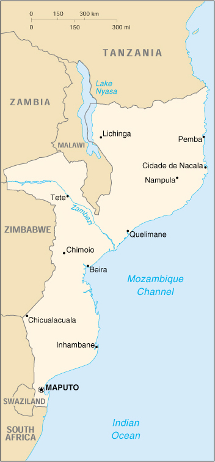

|
Mozambique | |
| Introduction Geography People Government Economy Communications Transportation Military Transnational Issues | ||
|  | ||
| Mozambique | Introduction | Top of Page |
| Background: | Almost five centuries as a Portuguese colony came to a close with independence in 1975. Large-scale emigration by whites, economic dependence on South Africa, a severe drought, and a prolonged civil war hindered the country's development. The ruling party formally abandoned Marxism in 1989, and a new constitution the following year provided for multiparty elections and a free market economy. A UN-negotiated peace agreement with rebel forces ended the fighting in 1992. |
| Mozambique | Geography | Top of Page |
| Location: | Southern Africa, bordering the Mozambique Channel, between South Africa and Tanzania |
| Geographic coordinates: | 18 15 S, 35 00 E |
| Map references: | Africa |
| Area: |
total:
801,590 sq km
land: 784,090 sq km water: 17,500 sq km |
| Area - comparative: | slightly less than twice the size of California |
| Land boundaries: |
total:
4,571 km
border countries: Malawi 1,569 km, South Africa 491 km, Swaziland 105 km, Tanzania 756 km, Zambia 419 km, Zimbabwe 1,231 km |
| Coastline: | 2,470 km |
| Maritime claims: |
exclusive economic zone:
200 NM
territorial sea: 12 NM |
| Climate: | tropical to subtropical |
| Terrain: | mostly coastal lowlands, uplands in center, high plateaus in northwest, mountains in west |
| Elevation extremes: |
lowest point:
Indian Ocean 0 m
highest point: Monte Binga 2,436 m |
| Natural resources: | coal, titanium, natural gas, hydropower, tantalum, graphite |
| Land use: |
arable land:
4%
permanent crops: 0% permanent pastures: 56% forests and woodland: 18% other: 22% (1993 est.) |
| Irrigated land: | 1,200 sq km (2000 est.) |
| Natural hazards: | severe droughts and floods occur in central and southern provinces; devastating cyclones |
| Environment - current issues: | a long civil war and recurrent drought in the hinterlands have resulted in increased migration of the population to urban and coastal areas with adverse environmental consequences; desertification; pollution of surface and coastal waters |
| Environment - international agreements: |
party to:
Biodiversity, Climate Change, Desertification, Endangered Species, Hazardous Wastes, Law of the Sea, Ozone Layer Protection
signed, but not ratified: none of the selected agreements |
| Mozambique | People | Top of Page |
| Population: |
19,371,057
note: estimates for this country explicitly take into account the effects of excess mortality due to AIDS; this can result in lower life expectancy, higher infant mortality and death rates, lower population and growth rates, and changes in the distribution of population by age and sex than would otherwise be expected; the 1997 Mozambican census reported a population of 16,099,246 (July 2001 est.) |
| Age structure: |
0-14 years:
42.72% (male 4,124,093; female 4,152,135)
15-64 years: 54.53% (male 5,222,477; female 5,339,615) 65 years and over: 2.75% (male 221,678; female 311,059) (2001 est.) |
| Population growth rate: | 1.3% (2001 est.) |
| Birth rate: | 37.2 births/1,000 population (2001 est.) |
| Death rate: | 24.21 deaths/1,000 population (2001 est.) |
| Net migration rate: | 0 migrant(s)/1,000 population (2001 est.) |
| Sex ratio: |
at birth:
1.03 male(s)/female
under 15 years: 0.99 male(s)/female 15-64 years: 0.98 male(s)/female 65 years and over: 0.71 male(s)/female total population: 0.98 male(s)/female (2001 est.) |
| Infant mortality rate: | 139.2 deaths/1,000 live births (2001 est.) |
| Life expectancy at birth: |
total population:
36.45 years
male: 37.25 years female: 35.62 years (2001 est.) |
| Total fertility rate: | 4.82 children born/woman (2001 est.) |
| HIV/AIDS - adult prevalence rate: | 13.22% (1999 est.) |
| HIV/AIDS - people living with HIV/AIDS: | 1.2 million (1999 est.) |
| HIV/AIDS - deaths: | 98,000 (1999 est.) |
| Nationality: |
noun:
Mozambican(s)
adjective: Mozambican |
| Ethnic groups: | indigenous tribal groups 99.66% (Shangaan, Chokwe, Manyika, Sena, Makua, and others), Europeans 0.06%, Euro-Africans 0.2%, Indians 0.08% |
| Religions: | indigenous beliefs 50%, Christian 30%, Muslim 20% |
| Languages: | Portuguese (official), indigenous dialects |
| Literacy: |
definition:
age 15 and over can read and write
total population: 42.3% male: 58.4% female: 27% (1998 est.) |
| Mozambique | Government | Top of Page |
| Country name: |
conventional long form:
Republic of Mozambique
conventional short form: Mozambique local long form: Republica de Mocambique local short form: Mocambique former: Portuguese East Africa |
| Government type: | republic |
| Capital: | Maputo |
| Administrative divisions: | 10 provinces (provincias, singular - provincia); Cabo Delgado, Gaza, Inhambane, Manica, Maputo, Nampula, Niassa, Sofala, Tete, Zambezia |
| Independence: | 25 June 1975 (from Portugal) |
| National holiday: | Independence Day, 25 June (1975) |
| Constitution: | 30 November 1990 |
| Legal system: | based on Portuguese civil law system and customary law |
| Suffrage: | 18 years of age; universal |
| Executive branch: |
chief of state:
President Joaquim Alberto CHISSANO (since 6 November 1986); note - before being popularly elected, CHISSANO was elected president by Frelimo's Central Committee 4 November 1986 (reelected by the Committee 30 July 1989)
head of government: Prime Minister Pascoal MOCUMBI (since NA December 1994) cabinet: Cabinet elections: president elected by popular vote for a five-year term; election last held 3-5 December 1999 (next to be held NA 2004); prime minister appointed by the president election results: Joaquim Alberto CHISSANO reelected president; percent of vote - Joaquim Alberto CHISSANO 52.29%, Afonso DHLAKAMA 47.71% |
| Legislative branch: |
unicameral Assembly of the Republic or Assembleia da Republica (250 seats; members are directly elected by popular vote on a secret ballot to serve five-year terms)
elections: last held 3-5 December 1999 (next to be held NA 2004) election results: percent of vote by party - Frelimo 48.54%, Renamo-UE 38.81%; seats by party - Frelimo 133, Renamo-UE 117 note: Renamo-UE ran as a multiparty coalition; none of the other opposition parties received the 5% required to win parliamentary seats |
| Judicial branch: |
Supreme Court (the court of final appeal; some of its professional judges are appointed by the president and some are elected by the Assembly); other courts include an Administrative Court, customs courts, maritime courts, courts marshal, labor courts
note: although the constitution provides for the creation of a separate Constitutional Court, one has never been established; in its absence the Supreme Court reviews constitutional cases |
| Political parties and leaders: | Front for the Liberation of Mozambique (Frente de Liberatacao de Mocambique) or Frelimo [Joaquim Alberto CHISSANO, chairman]; Mozambique National Resistance - Electoral Union (Resistencia Nacional Mocambicana - Uniao Eleitoral) or Renamo-UE [Afonso DHLAKAMA, president] |
| Political pressure groups and leaders: | NA |
| International organization participation: | ACP, AfDB, C, CCC, ECA, FAO, G-77, IBRD, ICAO, ICFTU, ICRM, IDA, IDB, IFAD, IFC, IFRCS, IHO, ILO, IMF, IMO, Inmarsat, Intelsat, Interpol, IOC, IOM (observer), ISO (correspondent), ITU, NAM, OAU, OIC, OPCW, SADC, UN, UNCTAD, UNESCO, UNHCR, UNIDO, UNTAET, UPU, WFTU, WHO, WIPO, WMO, WToO, WTrO |
| Diplomatic representation in the US: |
chief of mission:
Ambassador Marcos Geraldo NAMASHULUA
chancery: Suite 570, 1990 M Street NW, Washington, DC 20036 telephone: [1] (202) 293-7146 FAX: [1] (202) 835-0245 |
| Diplomatic representation from the US: |
chief of mission:
Ambassador Sharon P. WILKINSON
embassy: Avenida Kenneth Kuanda 193, Maputo mailing address: P. O. Box 783, Maputo telephone: [258] (1) 492797 FAX: [258] (1) 490114 |
| Flag description: | three equal horizontal bands of green (top), black, and yellow with a red isosceles triangle based on the hoist side; the black band is edged in white; centered in the triangle is a yellow five-pointed star bearing a crossed rifle and hoe in black superimposed on an open white book |
| Mozambique | Economy | Top of Page |
| Economy - overview: | Before the peace accord of October 1992, Mozambique's economy was devastated by a protracted civil war and socialist mismanagement. In 1994, it ranked as one of the poorest countries in the world. Since then, Mozambique has undertaken a series of economic reforms. Almost all aspects of the economy have been liberalized to some extent. More than 900 state enterprises have been privatized. A value-added tax, introduced in 1999, launched the government's comprehensive tax reform program. Pending are much needed commercial code reform and greater private sector involvement in the transportation, telecommunications, and energy sectors. Since 1996, inflation has been low and foreign exchange rates relatively stable. Albeit from a small base, Mozambique's economy grew at an annual 10% rate in 1997-99, one of the highest growth rates in the world. Growth slowed and inflation rose in 2000 due to devastating flooding in the early part of the year. Both indicators should recover in 2001. The country depends on foreign assistance to balance the budget and to pay for a trade imbalance in which imports greatly outnumber exports. The trade situation should improve in the medium term, however, as trade and transportation links to South Africa and the rest of the region have been improved and sizeable foreign investments are beginning to materialize. Among these investments are metal production (aluminum, steel), natural gas, power generation, agriculture, fishing, timber, and transportation services. Mozambique has received a formal cancellation of a large portion of its external debt through an IMF initiative and is scheduled to receive additional relief. |
| GDP: | purchasing power parity - $19.1 billion (2000 est.) |
| GDP - real growth rate: | 3.8% (2000 est.) |
| GDP - per capita: | purchasing power parity - $1,000 (2000 est.) |
| GDP - composition by sector: |
agriculture:
44%
industry: 19% services: 37% (1999 est.) |
| Population below poverty line: | 70% (2000 est.) |
| Household income or consumption by percentage share: |
lowest 10%:
2.5%
highest 10%: 31.7% (1996-97) |
| Inflation rate (consumer prices): | 11.4% (2000 est.) |
| Labor force: | 7.4 million (1997 est.) |
| Labor force - by occupation: | agriculture 81%, industry 6%, services 13% (1997 est.) |
| Unemployment rate: | 21% (1997 est.) |
| Budget: |
revenues:
$466.9 million
expenditures: $1.004 billion, including capital expenditures of $502.5 million (2000 est.) |
| Industries: | food, beverages, chemicals (fertilizer, soap, paints), petroleum products, textiles, cement, glass, asbestos, tobacco |
| Industrial production growth rate: | 7.2% (1999) |
| Electricity - production: | 2.3 billion kWh (1999) |
| Electricity - production by source: |
fossil fuel:
13.04%
hydro: 86.96% nuclear: 0% other: 0% (1999) |
| Electricity - consumption: | 307 million kWh (1999) |
| Electricity - exports: | 1.9 billion kWh (1999) |
| Electricity - imports: | 68 million kWh (1999) |
| Agriculture - products: | cotton, cashew nuts, sugarcane, tea, cassava (tapioca), corn, rice, coconuts, sisal, tropical fruits; beef, poultry |
| Exports: | $390 million (f.o.b., 2000 est.) |
| Exports - commodities: | prawns 40%, cashews, cotton, sugar, citrus, timber; bulk electricity (2000) |
| Exports - partners: | EU 27%, South Africa 26%, Zimbabwe 15%, India 12%, US 5%, Japan 4% (1999 est.) |
| Imports: | $1.4 billion (c.i.f., 2000 est.) |
| Imports - commodities: | machinery and equipment, mineral products, chemicals, metals, foodstuffs, textiles (2000) |
| Imports - partners: | South Africa 44%, EU 16%, US 6.5%, Japan 6.5%, Pakistan 3%, India 3% (1999 est.) |
| Debt - external: | $1.4 billion (2000 est.) |
| Economic aid - recipient: | $1.04 billion (1998) |
| Currency: | metical (MZM) |
| Currency code: | MZM |
| Exchange rates: | meticais per US dollar - 17,331.0 (January 2001), 5,199.8 (2000), 12,775.1 (1999), 11,874.6 (1998), 11.543.6 (1997), 11,293.8 (1996) |
| Fiscal year: | calendar year |
| Mozambique | Communications | Top of Page |
| Telephones - main lines in use: | 65,354 (2000) |
| Telephones - mobile cellular: | 18,500 (2000) |
| Telephone system: |
general assessment:
fair system but not available generally (telephone density is only 3.5 telephones for each 1,000 persons)
domestic: the system consists of open-wire lines and trunk connection by microwave radio relay and tropospheric scatter international: satellite earth stations - 5 Intelsat (2 Atlantic Ocean and 3 Indian Ocean) |
| Radio broadcast stations: | AM 13, FM 16, shortwave 12 (2000) |
| Radios: | 730,000 (1997) |
| Television broadcast stations: | 1 (2000) |
| Televisions: | 67,600 (2000) |
| Internet country code: | .mz |
| Internet Service Providers (ISPs): | 8 (2000) |
| Internet users: |
6,250
note: 150 corporate accounts and 6,100 individual accounts (2000) |
| Mozambique | Transportation | Top of Page |
| Railways: |
total:
3,131 km
narrow gauge: 2,988 km 1.067-m gauge; 143 km 0.762-m gauge (1994) |
| Highways: |
total:
30,400 km
paved: 5,685 km unpaved: 24,715 km (1996) |
| Waterways: | 3,750 km (navigable routes) |
| Pipelines: |
crude oil 306 km; petroleum products 289 km
note: not operating |
| Ports and harbors: | Beira, Inhambane, Maputo, Nacala, Pemba, Quelimane |
| Merchant marine: |
total:
3 ships (1,000 GRT or over) totaling 4,125 GRT/7,024 DWT
ships by type: cargo 3 (2000 est.) |
| Airports: | 168 (2000 est.) |
| Airports - with paved runways: |
total:
22
over 3,047 m: 1 2,438 to 3,047 m: 3 1,524 to 2,437 m: 10 914 to 1,523 m: 3 under 914 m: 5 (2000 est.) |
| Airports - with unpaved runways: |
total:
146
2,438 to 3,047 m: 1 1,524 to 2,437 m: 16 914 to 1,523 m: 37 under 914 m: 92 (2000 est.) |
| Mozambique | Military | Top of Page |
| Military branches: | Army, Naval Command, Air and Air Defense Forces, Militia |
| Military manpower - availability: | males age 15-49: 4,627,052 (2001 est.) |
| Military manpower - fit for military service: | males age 15-49: 2,670,933 (2001 est.) |
| Military expenditures - dollar figure: | $35.1 million (2000 est.) |
| Military expenditures - percent of GDP: | 1% (2000 est.) |
| Mozambique | Transnational Issues | Top of Page |
| Disputes - international: | none |
| Illicit drugs: | Southern African transit point for South Asian hashish, South Asian heroin, and South American cocaine probably destined for the European and South African markets; producer of cannabis (for local consumption) and methaqualone (for export to South Africa) |
{kind=link}
{kind=link}